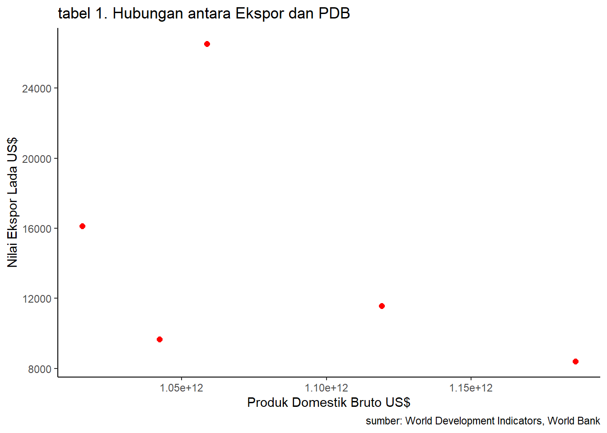

library('tidyverse')
library('readxl')
library('writexl')ANALISIS PENGARUH EKSPOR LADA HITAM INDONESIA KE NEGARA VIETNAM TERHADAP PDB INDONESIA
Metode Penelitian Politeknik APP Jakarta

This just a showcase of what Quarto docs can produce. I use this part for my students.
1 Pendahuluan
1.1 Latar belakang
Indonesia sebagai salah satu negara berkembang menjadikan perdagangan internasional salah satu kegiatan penting dalam perekonomian. Perdagangan internasioanl merupakan kegiatan perdagangan yang dilakukan oleh suatu negara dengan negara lain atas dasar kesepakatan bersama. Kegiatan perdagangan internasional dilakukan bertujuan untuk meningkatkan standar hidup negara tersebut (Schumacher, 2013). Terbukanya perdagangan internasional akan menguntungkan negara yang bersangkutan secara keseluruhan. Kegiatan perdagangan internasional yang menguntungkan yaitu ekspor.
Ekspor merupakan salah satu bagian penting dalam perdagangan internasional. Negara yang melakukan kegiatan eskpor akan mendapatkan banyak sekali manfaat, salah satunya adalah mendorong kelancaran arus perdagangan dalam negeri. Semakin sering sutau negara melakukan eskpor, maka PDB negara tersebut akan semakin bagus. Artinya, masyarakat negara tersebut mampu melakukan proses produksi yang pada akhirnya dapat diekspor ke negara lain.
Indonesia menjadi salah satu negara yang sering melakukan kegiatan ekspor. Salah satu komoditi yang sering di eskpor adalah lada hitam. Berdasarkan neraca perkebunan 2021, ekspor lada berhasil mencapai 39.961,36 ton. Hal ini dikarenakan Indonesia menjadi produsen serta eksportir lada terbesar di dunia.
1.2 Ruang lingkup
Ruang lingkup materi pada penelitian ini dibatasi pada pembahasan mengenai hubungan antara ekspor lada hitam ke negara vietnam dengan pengaruhnya terhadap PDB Indonesia.
1.3 Rumusan masalah
1. Bagaimana pengaruh ekspor lada hitam Indonesia terhadap PDB Indonesia tahun 2017-2021?
2. Apakah Jumlah ekspor lada hitam Indonesia ke negara Vietnam berpengaruh terhadap PDB Indonesia tahun 2017-2021?
3. Bagaimana pertumbuhan PDB Indonesia tahun 2017-2021?
1.4 Tujuan dan manfaat penelitian
Berdasarkan rumusan masalah diatas, maka tujuan dari penelitian ini yaitu, Untuk mengetahui pengaruh ekspor lada hitam Indonesia terhadap PDB Indonesia tahun 2017-2021, Untuk mengetahui apakah jumlah ekspor lada hitam ke negara vietnam berpengaruh terhadap PDB Indonesia tahun 2017-2021, dan Untuk mengatahui pertumbuhan PDB Indonesia tahun 2017-2021. Penelitian ini diharapkan agar pembaca dapat mengetahui pengaruh ekspor lada hitam ke Vietnam terhadap PDB Indonesia dan untuk menambah pengetahuan pembaca mengenai pengaruh ekspor lada hitam ke Vietnam terhadap PDB Indonesia.
1.5 Package
Ini tidak wajib ada di packages yang digunakan antara lain sebagai berikut:
2 Studi pustaka
TEORI 1
Menurut H Banu Santoso (2003), Ekspor adalah perdagangan dengan cara mengeluarkan barang dari dalam keluar wilayah pabean Indonesia dengan berdasarkan ketentuan yang berlaku
Menurut Astuti Purnawati (2013) dan Sri Fatmawati (2013), Ekspor adalah kegiatan menjual barang/jasa dari daerah pabean sesuai peraturan dan undang-undang yang berlaku. Daerah pabean yang dimaksud ialah seluruh wilayah nasional dari suatu negara , diamana dipungut bea masuk dan bea keluar untuk semua barang-barang yang melewati wilayah tersebut.
TEORI 2
- Menurut Sukirno (2013:34) dalam bukunya makroekonomi teori pengantar, Produk Domestik Bruto (PDB) dapat diartikan sebagai nilai barang-barang dan jasa-jasa yang diproduksikan di dalam negara dalam satu tahun tertentu.
3 Metode penelitian
3.1 Data
Data volume ekspor lada hitam ke negara Vietnam (Ton)
| 2017 | 2018 | 2019 | 2020 | 2021 |
| 3.377 | 4.258 | 5.600 | 12.143,30 | 2.524,90 |
| 2017 | 2018 | 2019 | 2020 | 2021 |
|---|---|---|---|---|
| 16.134,6 | 9.669,7 | 11.581,5 | 26.258,1 | 8.415,1 |
| 2017 | 2018 | 2019 | 2020 | 2021 |
|---|---|---|---|---|
| 1.01562e+12 | 1.04227e+12 | 1.11910e+12 | 1.05869e+12 | 1.18609e+12 |
penelitian ini menggunakan data xxx
dat<-read_excel('GDPINDONESIA.xlsx')
ggplot(data=dat,aes(x=GDP,y=NILAI)) +
geom_point(color="red",size=2) + # setiap nambah command, selalu kasih tanda +
labs(title="tabel 1. Hubungan antara Ekspor dan PDB",
x="Produk Domestik Bruto US$",
y="Nilai Ekspor Lada US$",
caption = "sumber: World Development Indicators, World Bank") +
theme_classic()
3.2 Metode analisis
Metode yang dipilih adalah regresi univariat atau Ordinary Least Square (OLS) dengan 1 variabel independen. Penelitian ini merbaksud mencari hubungan antara ekspor lada hitam dan PDB Indonesia. Spesifikasi yang dilakukan adalah:
\[ y_{t}=\beta_0 + \beta_1 x_t+\mu_t \] di mana \(y_t\) adalah aps dan \(x_t\) adalah jps.
4 Pembahasan
4.1 Pembahasan masalah
Pada bagian ini data yang ditampilkan dan divisualisasikan, sebagai berikut:
4.2 Analisis masalah
Hasil regresinya adalah
reg1<-lm(GDP~NILAI+VOL,data=dat)
summary(reg1)
Call:
lm(formula = GDP ~ NILAI + VOL, data = dat)
Residuals:
1 2 3 4 5
-2.260e+10 -7.467e+10 4.507e+09 1.402e+10 7.875e+10
Coefficients:
Estimate Std. Error t value Pr(>|t|)
(Intercept) 1.162e+12 8.908e+10 13.042 0.00583 **
NILAI -1.040e+07 1.167e+07 -0.891 0.46713
VOL 1.306e+07 2.235e+07 0.585 0.61799
---
Signif. codes: 0 '***' 0.001 '**' 0.01 '*' 0.05 '.' 0.1 ' ' 1
Residual standard error: 7.907e+10 on 2 degrees of freedom
Multiple R-squared: 0.3318, Adjusted R-squared: -0.3365
F-statistic: 0.4965 on 2 and 2 DF, p-value: 0.6682Dapat dilihat dari tabel di atas bahwa ini bukan regresi AR(1). wkkwkwkwk.
library(tidyverse)
library(readxl)
reg1<-lm(GDP~NILAI+VOL,data=dat)
summary(reg1)
Call:
lm(formula = GDP ~ NILAI + VOL, data = dat)
Residuals:
1 2 3 4 5
-2.260e+10 -7.467e+10 4.507e+09 1.402e+10 7.875e+10
Coefficients:
Estimate Std. Error t value Pr(>|t|)
(Intercept) 1.162e+12 8.908e+10 13.042 0.00583 **
NILAI -1.040e+07 1.167e+07 -0.891 0.46713
VOL 1.306e+07 2.235e+07 0.585 0.61799
---
Signif. codes: 0 '***' 0.001 '**' 0.01 '*' 0.05 '.' 0.1 ' ' 1
Residual standard error: 7.907e+10 on 2 degrees of freedom
Multiple R-squared: 0.3318, Adjusted R-squared: -0.3365
F-statistic: 0.4965 on 2 and 2 DF, p-value: 0.66825 Kesimpulan
Berdasarkan hasil regresi diatas dapat dilihat bahwa setiap nilai ekspor lada hitam Indonesia ke Vietnam yang dilakukan akan menurunkan nilai PDB Indonesia sebesar 8.908e+10 (-10.400.000.000 USD). Tetapi nilai PDB Indonesia akan bertambah sebesar 1.306e+07 (13.060.000.000 USD) setiap 1 ton lada hitam Indonesia yang diekspor ke Vietnam. Dari hasil regresi tersebut dapat disimpulkan bahwa jumlah ekspor lada hitam Indonesia ke Vietnam selama 2017-2021 berpengaruh terhadap hasil nominal PDB Indonesia. Sehingga ekspor lada hiitam ke Vietnam cukup berpengaruh terhadap nilai PDB Indonesia. Karena hasil regresinya memiliki bintang sebanyak ** yang dimana dapat diartikan bahwa data diatas merupakan data yang cukup signifikan.
6 Referensi
Badan Pusat Statistik. (t.t.). Diambil 19 Januari 2023, dari https://www.bps.go.id/statictable/2019/02/18/2021/ekspor-lada-hitam-menurut-negara-tujuan-utama-2012–2021.html
Sinaga, A. P., Purba, E. F., & Si, M. (2005). PENGARUH EKSPOR TERHADAP PENIGKATAN PRODUK DOMESTIK REGIONAL BRUTO (PDRB) KOTA MEDAN (ANALISIS BASIS EKONOMI) PROVINSI SUMATERA UTARA.
Referensi ini dibuat dengan Zotero. Di penelitian aslinya, anda harus masukan referensi yang anda gunakan ketika mulai menulis.